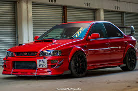

Your journey toward owning the perfect vehicle starts here! At Matsue Autos, we make car buying effortless, exciting, and tailored to fit your lifestyle. Whether you're looking for a fuel-efficient hatchback, a reliable SUV, or a premium sedan that turns heads—we’ve got you covered with our wide inventory of quality vehicles. 🔑 Why Choose Us??? Handpicked cars inspected for safety and performance Flexible financing options to suit your budget Friendly customer support and expert guidance Trusted after-sales service with genuine parts 👨👩👧👦 Built for You We understand the needs of Kenyan drivers and offer cars that excel on both city streets and open roads. Our team is dedicated to helping you find the vehicle that best fits your family, work, or adventurous lifestyle. 🛠️ Beyond the Sale With ongoing service and support, you become part of the Matsue Autos family from the moment you drive off our lot. Your satisfaction drives us, and our commitment to quality keeps your wheels turning. 🌍 Shop With Ease Visit our showroom or explore online. Either way, we promise a smooth, secure, and transparent experience from first click to final handshake.
Your journey toward owning the perfect vehicle starts here! At Matsue Autos, we make car buying effortless, exciting, and tailored to fit your lifestyle. Whether you're looking for a fuel-efficient hatchback, a reliable SUV, or a premium sedan that turns heads—we’ve got you covered with our wide inventory of quality vehicles. 🔑 Why Choose Us? Handpicked cars inspected for safety and performance Flexible financing options to suit your budget Friendly customer support and expert guidance Trusted after-sales service with genuine parts 👨👩👧👦 Built for You We understand the needs of Kenyan drivers and offer cars that excel on both city streets and open roads. Our team is dedicated to helping you find the vehicle that best fits your family, work, or adventurous lifestyle. 🛠️ Beyond the Sale With ongoing service and support, you become part of the Matsue Autos family from the moment you drive off our lot. Your satisfaction drives us, and our commitment to quality keeps your wheels turning. 🌍 Shop With Ease Visit our showroom or explore online. Either way, we promise a smooth, secure, and transparent experience from first click to final handshake.
